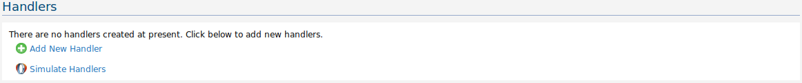
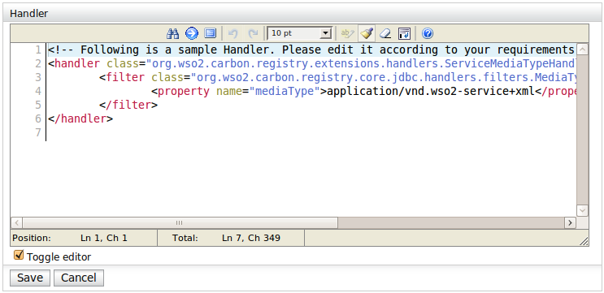
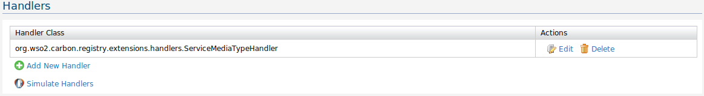
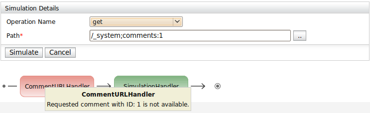

Select the Handlers menu option under the Extensions menu. You will then see something similar to what is seen below if no handlers have been added so far.

Figure 1: Configure Handlers page
You can then add a new handler by selecting the Add New Handler option. This will bring up the Handler Source view as seen below.

Figure 2: Handler Source view
You can toggle the editor between the rich and plain modes by checking/un-checking the Toggle editor checkbox. A sample Handler configuration is presented (as seen above), which you can replace with the configuration of your custom handler. After adding the handler configuration, you have to click the Save button to add the new handler. If the handler has been added successfully, you should see a confirmation message stating that the configuration has been saved.
After one or more handlers have been added, the Configure Handlers page will be similar to what is seen below.

Figure 3: Configure Handlers page (with configured handlers)
You can edit/delete the configured handlers by clicking on the respective links.
To simulate built-in and user defined handlers, you need to select the Simulate Handlers option on the Configure Handlers page. This will bring up the User Interface seen below.
Figure 4: Handler Simulator
You need to select the operation name, fill at least the mandatory fields, and click on the Simulate button, to simulate the handlers that are executed as a result of invoking the selected operation along with the provided details. This will generate a graphical representation of the handlers invoked along with the status of each handler as seen below.

Figure 5: Handler Simulation Result
get
Path - The path from which the resource is fetched
put
Path - The path to which the resource is added
Resource Path - The path of the existing resource (which will be put to the new path)
Optional Parameters:
Media Type - The media type of the resource
resourceExists
Path - The path at which the resource existence is checked
delete
Path - The path from which the resource is deleted
importResource
Path - The path to which the resource is imported
URL - The source URL of the resource imported
Optional Parameters:
Media Type - The media type of the resource
copy
Path - The source path
Target Path - The target path
move
Path - The source path
Target Path - The target path
rename
Path - The source path
Target Path - The target path
removeLink
Path - The path at which the link is removed
createLink
Path - The path at which the link is created
Target Path - The target path (or instance identifier) of the link
Target Sub-path - The target sub-path
invokeAspect
Path - The path at which the aspect is invoked
Aspect Name - The name of the aspect
Action - The invoked action
addAssociation
Path - The path at which the association is added
Target Path - The target path or URL
Association Type - The type of the created association
removeAssociation
Path - The path at which the association is removed from
Target Path - The target path or URL
Association Type - The type of the removed association
getAssociations
Path - The path at which the associations are fetched
Association Type - The type of the fetched associations
getAllAssociations
Path - The path at which the associations are fetched
createVersion
Path - The path at which the version is created
restoreVersion
Path - The path at which the version is restored (should include the version details)
getVersions
Path - The path at which the versions are fetched from
applyTag
Path - The path at which the tag is applied
Tag - The tag applied
removeTag
Path - The path at which the tag is removed
Tag - The tag removed
getTags
Path - The path at which the tags are fetched
getResourcePathsWithTag
Tag - The tag for which the resource paths are obtained
rateResource
Path - The path to which the rating is added
Rating - The rating added (must be a number)
getRating
Path - The path from which the rating is fetched from
Username - The name of the user who rated the resource
getAverageRating
Path - The path from which the average rating is fetched from
addComment
Path - The path to which the comment is added
Comment - The comment added
removeComment
Path - The path to which the comment is removed from
editComment
Path - The path to which the edited comment is added
Comment - The edited comment
getComments
Path - The path from which the comments are fetched
searchContent
Keywords - The keywords used to search the content
executeQuery
Parameters - The query parameters (should be in the format, key1:val1,key2:val2,...)
Optional Parameters:
Path - The path at which the query is stored